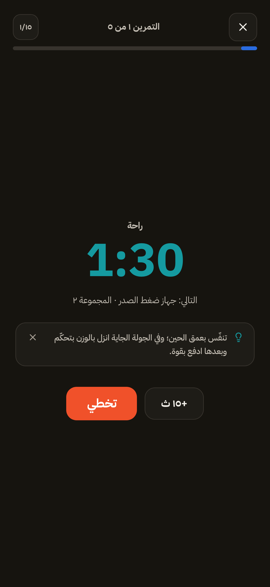
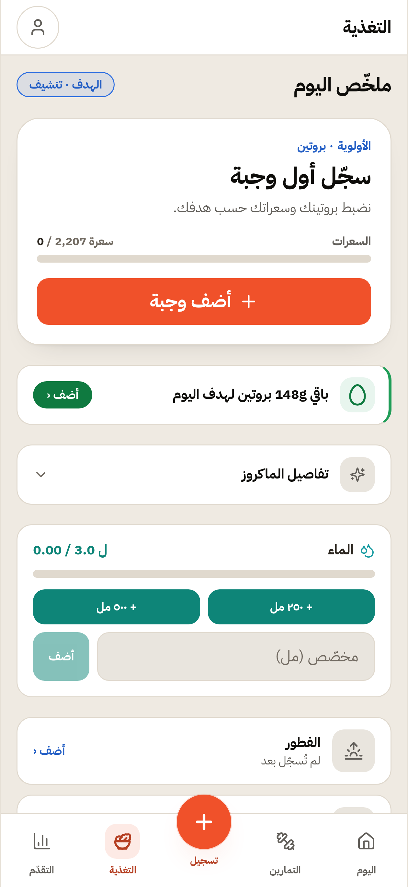
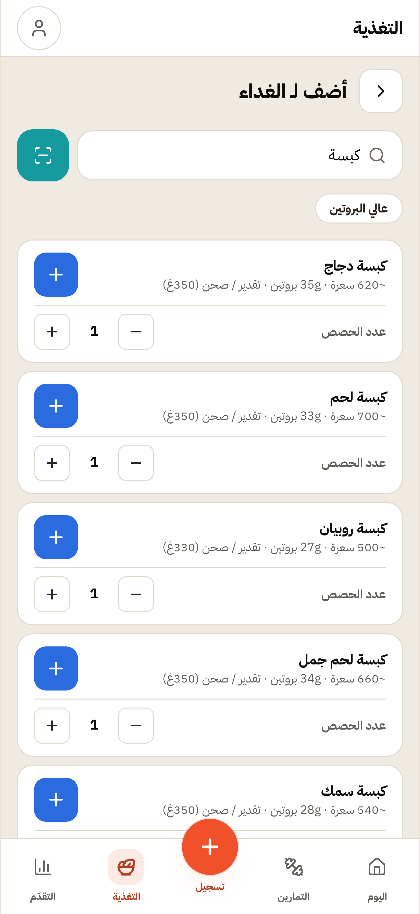

رحلة المولود الجديد
The newcomer journey
📍 الأرض: i/journey-advanced @ b47cbf3 — chore(e2e): توثيق أداة تشخيص الحراسة وضمّها
28 فحصًا ناجحًا
16 لقطة
1 التقاطة
التقاطات مرفوعة — لا تُصلَح في هذه الحارة
- لا مسار ضيف من شاشة الترحيب — «ابدأ الآن» تقود إلى إنشاء حساب
أزرار الترحيب: EN · ابدأ الآن · عندك حساب؟ تسجيل الدخول — و«ابدأ الآن» تنقل إلى #/login. ونصّ «كمّل كضيف» موجود في src/config/strings.ts (٤ مداخل عربي+إنجليزي) ولا يشير إليه أي مكوّن: StartViewV2 يرسم onSignup وonLogin فقط. وعد «محلي افتراضيًا» (الميثاق §9) بلا مدخل في تدفّق v2.

Welcome — the first screen

Step 1 — basics and health consent

Basics filled — 28y · 178cm · 82kg

Step 2 — intent and level

Intent and beginner level picked

Step 3 — goal in beginner wording

Step 4 — training days and duration

Step 5 — place and equipment

Plan ready — the first output

Today dashboard — after approving the plan

Workout tab after approving the plan

Session active — first exercise

A set logged — 40 kg

Nutrition screen

Add-a-meal sheet

Searching "Kabsa" — Saudi food results